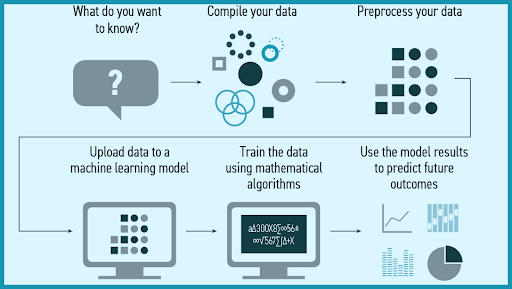

Machine Learning
Article written by Zhen Rong Xavier Tan@S3784659
What is Machine Learning?
Machine learning, as the name implies, is the ability for a machine to learn and notice patterns without any explicit programming. Elaborating on how this is done, machines are initially programmed with algorithms that allow them to analyse a particular set of data. From this point on the machine functions on the algorithm and becomes trained to ‘understand’ patterns of information, how to interpret it, and finally how to display it as a model to be utilised by us humans.
How does a Machine Learn?
Depending on the input required for a machine, different classifications of machine learning is used. There are three major categories, and they are labelled as follows: Supervised learning, unsupervised learning, and reinforcement learning.
Starting with supervised learning, the best analogy to describe this method is to compare it to a teacher and student relationship. We provide the machine with good examples that fit with the associated target responses so that it can eventually learn to pick up those same target responses from given data by itself.
On the other side, we have unsupervised learning, where we once again provide the machine with data, however, the data provided is a mish-mash of plain examples that can either be of the target response or not. With this method, the machine is left to interpret the data patterns on its own, and more likely than not, the machine restructures the data into a set of unrelated values. Although it sounds impractical at first, it provides us with a different insight into how machines interpret data, when compared to supervised learning.
Finally, reinforcement learning can be seen as a combination of both supervised and unsupervised learning. The machine is given plain data, like that of unsupervised learning, however, in this method, we provide positive or negative feedback to the machine based on the machine’s proposed decisions. Because the machine learns to tell what is good and what is bad based on human input, reinforcement learning is used when the machine is associated with making decisions, especially if those decisions can bear consequences.
Where and How is it Being Used Now?

Machine learning has been around for many years and has never been more present in the digital environment than now. Recommendation engines on YouTube and Netflix can provide users with fresh content to consume based on their watch history and personal data, allowing for an almost never-ending stream of entertainment. Similar recommendation engines are also used on sites that sell products, giving users recommendations to related items that they have recently viewed, or other items that are associated with previously bought items. Machine learning has also been used for facial recognition on social media platforms such as Facebook. After manually tagging yourself or friends in images, the system can learn the data patterns associated with a person’s image, and make future assumptions with scary accuracy. With machine learning also having predictive capabilities through the analysis of past data, businesses have begun implementing machine learning algorithms to aid in making important business decisions. Thus, we have seen a significant increase in funding raised for companies specialising in machine learning.
A Recent Breakthrough in Machine Learning
The latest breakthroughs in machine learning have even allowed the likes of autonomous vehicles, which we could have only dreamed of having existed in the past. The leading company for fully self-driving cars, Tesla, utilises deep neural networks and trains them using raw image data so that they can perform 3D object detection, and depth perception. This allows their neural networks to deal with problems ranging from perception to control. But with such a system, comes an immense amount of computing power and time. One full build of autopilot neural networks requires 48 networks, which in total takes 70,000 GPU hours to train (Tesla n.d), but even then, the ethics behind letting a machine make all the decisions on the road is at question.
The Future of Machine Learning
In the current digital landscape, one of the largest limiting factors for any technological development is computing power. With the advancements in quantum computing and other advancements in the future to come, we are likely to see a boost in machine learning capabilities. Since quantum computing allows for simultaneous multi-state operations, and faster data processing, time spent training machines could be cut down dramatically, and data analysis could become provide wider insights. As we continue to develop the foundation for more advanced machine learning techniques, we are bound to see artificial intelligence become as advanced as the human mind.
With the growth of machine learning techniques, we can hope to see it benefit many different industries. With the massive amounts of data that is generated in the healthcare industry, we can hope to see developments in disease prediction and drug discovery. Increased computing power would allow machines to analyse a wider range of variables than the traditional variables of age, weight, height, and gender, leading to more accurate disease prediction. As for drug discovery, data on compounds present in existing drug samples can be analysed to predict a particular drug’s impact and side effects. The manufacturing industry also benefits from advancements in machine learning technology. Machine learning tools are already being used with some manufacturers to monitor equipment performance and condition, as well as to predict product quality or energy consumption, but in the near future, machine learning could also aid in reducing costs, and improving both quality control and supply chain management.
How Will Machine Learning Affect Employment?
We have talked about the many positive aspects that machine learning has to offer, so there’s no doubt that it is an important skill to have in the current job market. In fact, we are expected to see an increase of 71% of jobs requesting machine learning knowledge. With machine learning often specialising in the data analysis field, it may replace the traditional jobs present for that field, or it could be a tool that changes the way data analysis is handled. Either way, machine learning is likely to create new job positions in companies, while increasing the demand for people with machine learning skills.
The Personal Impact of Machine Learning
If anything, it is hard to imagine that machine learning could impact us in any other way than positively. We have already seen present day implementations in our everyday routines, and how important to both aspects of work and entertainment. Because of artificial intelligence, our lives become easier and more comfortable, from automating work processes to giving us show recommendations. The little nuances in life have become something so small that we will not even have to think about them. With the future of machine learning looking bright, it only seems like life will get even better, and it may even start from driverless cars becoming widespread.